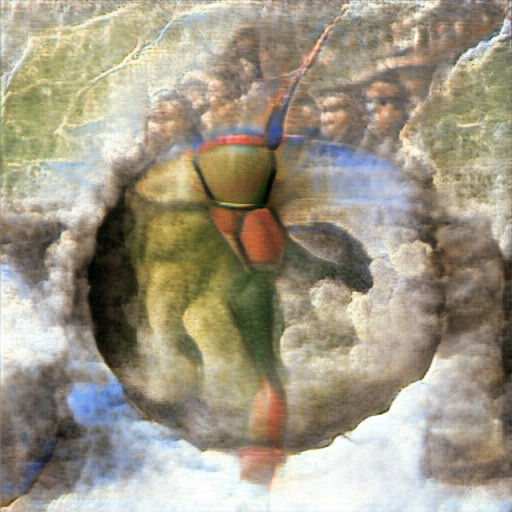
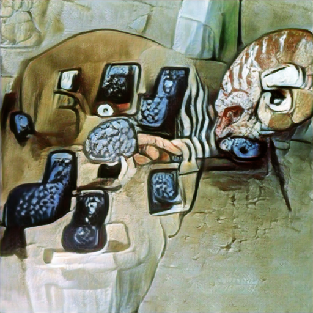
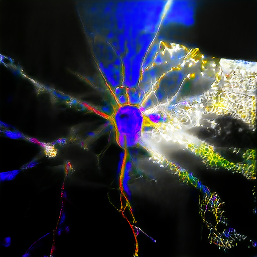

Generative Art

I love art and have always been fascinated by those who could express themselves and their creativity with the stroke of a brush. Unfortunately, I’ve been cursed with the ability to draw of a blind chicken. So it was with complete awe that I discovered that generative models can be manipulated to put together beautiful and aesthetic images. I became fascinated by these models and the idea that I can finally express myself in a visual canvas.
This is something that helps me unwind. Just taking strolls down latent space.
  Below is a list of awesome resources (none authored by me) that can be used for image or audio generation.
Awesome Generative Models for creativity
List of awesome algorithms and notebooks freely available to use:
-
DALL-E Generating images from descriptions (VQVAE + Transformers)
-
Deep Fakes Application of FaceSwap to video.
-
Google Deep Dream Notebook to adapt input data (images) to minimize a given layer’s error. Trippy results.
-
BigGAN Really big generator - 1k categories and millions of parameters.
-
Style Transfer Transfering style between 2 2D images - e.g., change type of paintings
- Alien Element Add a foreign element to the image and adjust its style to original image
-
Lucid collection Feature visualization and networks interpretability
-
StyleGAN2
-
Lucid Sonic Dreams Generative Audio-Visual Art - using music to navigate the latent space
-
Deep Music Visualizer Similar concept
-
GPT2 - train and evaluate
Pedro F da Costa
PhD Researcher
Pedro is interested in the applying Machine Learning to real-life problems. He uses generative models and classical machine learning algorithms to create better tools for Neuroscience research.